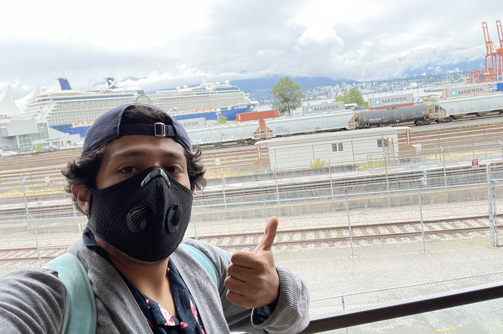
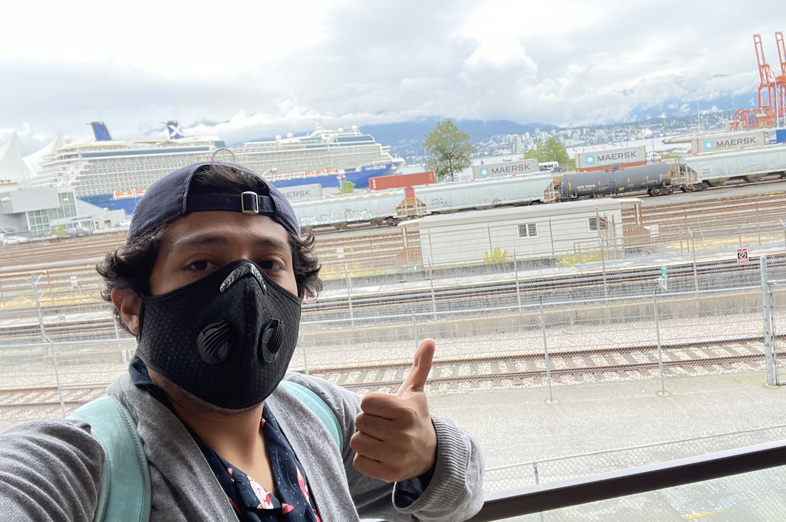

 About me
I am a first year PhD student at Texas A and M University in the Department of Mathematics.
My research interests lie in symplectic topology and homological mirror symmetry, with tools from stable homotopy theory, PDEs, and algebraic geometry. My current potential advisor is Prof. Sherry Gong and Prof. John Etnyre .
Office: Blocker 530
Email: jlopez1234@tamu.edu
Statement about teaching
One of my goals in life is to make high-level math reachable and understandable to a wider group of people than the one today. I want to teach these ideas in such a way that anyone, willingly, can understand them. It is common to hear that mathematics is very hard, or among the least liked subjects in school. However, this could be due to inadequate teaching, or lack of knowledge about the material. Hence, the history of mathematics can also be changed through teaching. I have been surrounded with academia for the most part of my life. Thus, I am a firm believer that education is a door where students can start pursuing great things, actually enjoying going to class, and regain hope in the things to come.
I find it very useful to write stuff up. Here are some things that I am currently thinking about. I limit myself to 2 projects at a time. However, since I want to start doing reasearch 3rd year, I have time right now to get a lot of work done
Fall 2022 - Spring 2023: Stable homotopy theory, following Atiyah, Ravenel (collaboration with other people)
2022 - Spring 2023: Floer theory, beginnings (Donaldson-Kronheimer + McDuff-Salamon + Manolescu + Rubermann + Osvath-Szabo)
Fall 2022 - Spring 2023: Floer theory, current state (Donaldson-Kronheimer + McDuff-Salamon + Manolescu + Rubermann + Osvath-Szabo + Floer homotopy theory) (collaboration with other people)
Fall 2022 - Spring 2023: Homological mirror symmetry, following Auroux, Seidel, Sheridan, Thomas (collaboration with other people)
Fall 2022 - Spring 2023: Low dim top and gauge theory, following Clay, Scorpan
Spring 2022: 4-manifolds , TAMU student working seminar, follow Scorpan
Summer 2021: Kobayashi and Nomizu Ch. 1,2
2020: Notes in Differential Geometry
2020: Notes in Lefschetz fibrations
Spring 2020: Atiyah-Singer Index Theorem , Master thesis
Things that I want to learn about in the future. I will keep this list short (2 items per semester) because then it's not healthy. However, I will not loose the sense of wonder
Yang-Mills by Atiyah-Bott + Donaldson new proof
Derived algebraic geometry from Lurie
Dynamics from McMullen
Deformation theory by Hartshorne
Education
2019-2020: Mast in Mathematics from Part III University of Cambridge. Wrote a thesis on Atiyah-Singer Index Theorem under the supervision of Dr. Alexei Kovalev
2018-2019: Postbac certificate in Mathematics from Iowa State University
2014-2018: BS degree in Mathematics from University of Texas Rio Grande Valley
2017: Studied abroad at ETH Zurich ETH Zurich. Changed my life
Positions held
2022: 409 Advanced Calculus grader, TAMU
2022: Directed reading program, TAMU
2021: 602 PDEs grader, TAMU
2021: Teacher for Physics, Precalculus and Calculus, SJA
2021: Graduate teacher assistant, ISU
2020: Math tutor for Learning Center, UTRGV
2020: Resident Assistant for Upward Bound Program, UTRGV
Class notes
One day: Machine learning
Spring 2023: PDEs II and geometric analysis, follow Aubin, Donaldson, Evans and Kantz
Fall 2022: PDEs I, follow Evans
Spring 2022: Differential forms in algebraic topology , Bott-Tu
Spring 2022: Homological mirror symmetry , follows Vafa, Thomas, Katz, Vakil, etc. and Auroux class hms
Spring 2022: Morse theory
Fall 2021: Hodge theory mini-course , follow Warner
Fall 2021: Topology from a differentiable viewpoint, Milnor
Fall 2021: Topology
Fall 2021: Real Analysis
Spring 2021: GW/DT invariants , notes from the class by Prof. Sheshmani
Fall 2019: Part III Differential Geometry
Spring 2020: Part III Symplectic Geometry
Fall 2019: Part III Algebraic Topology
Fall 2019: Part III Algebraic Geometry
Spring 2020: Part III Complex Geometry
Problem solving in Math
Like Prof. Alessandro Carlotto (ETH) says, math is not a spectator sport. So in order to be better at math I need to do math. Therefore, I am spending my Saturday's of my second year of graduate school to do math problems.
Folland (1-6), Conway, Dummit and Foote, PDEs very close to Evans, notes by David Tong, Atiyah-Macdonald, and SMS Floer homotopy conference hmks.
In my Master's, I was given some interesting problems. I believe is against the University policy to upload them on the internet. But they follow closely the books above. I have solutions to some selected exercises from my time in ISU: ODEs by Perko, PMA by Rudin, Linear algebra by Prof. Hogben, and Intro Algebra by Hungerford. I am pending to upload them.
Also, I will be taking the following Qualyfing exams:Summer 2022: Top/DG Qual
Summer 2023: Physics Qual
Conferences
Fall 2022: HMS workshop, CMSA
Fall 2022: Gauge theory, low dimensional topology workshop, MSRI
Summer 2022: Floer homotopy theory, UBC, exercises and some solutions. The second file is Hiro's notes, which are amazing
2022: Georgia Tech low-dimensional topology conference
2022: Texas Topology conference
2021: SIAM conference
2021: South Central Texas Topology conference
2021: Advances in Symplectic Topology
2020-: Symplectic Zoominar
2020: AGITTOC
2019: MSRI H-Principle
2019: PCMI
2018: SAMMS at OSU
2018: Field of Dreams
2018: MSRI Topology and dynamical systems
Talks
Fall 2022: Graduate Student Seminar at TAMU
Fall 2021: Graduate Student Seminar at TAMU
2021: Fitchburg State University talk promoting math
2020: Kuranishi structures, AGITTOC
2020: Stable curves, AGITTOC
The following books, papers and notes are the ones I studied for my first 2 years of graduate school. Of course, I continue studying them. I want to start doing research and publishing in my 3rd year. I learned from the value of books from Prof. Guangbo Xu. My goal is to make a difference on earth. Work hard in this pilgrimage called life and enjoy the journey.
Books to know by heart: these are my favorite math books
Complex cobordisom by Ravenel
Mirror symmetry by Vafa, Thomas, Vakil, Phandaripande, etc.
Wild world of 4 manifolds by Scorpan
Low-dimensional topology, gauge theory by Osvath, Szabo, Lipschitz
Geometry of 4-manifolds, Donaldson-Kronheimer
J-holomorphic curves, Salamon-McDuff
Intro to smooth manifolds, Lee
Papers to know by heart
Auroux Fukaya categories
Atiyah-Bott Yang-Mills equations over Riemann surface
Donaldson “a new proof…”
Thomas geometry of mirror symmetry
Smith symplectic prolegomenon
Floer (3)
Manolescu Floer theory and applications
Osvath Szabo
Donaldson comments on dg
Yau geometric analysis
Thomas derived category
Witten string theory
Auroux Katsarkov Orlov mirror symmetry
Abouzaid Blumberg
Abouzaid McLean Smith
Notes to know by heart
HMS, Auroux
Floer theory, Salamon
Geometric analysis, Donaldson
Floer theory, Salamon
4 manifolds, Manolescu
Yang-Mills, Jonny Evans
Complex geometry, Joyce
Rubermann, Instanton Floer theory
Mini-course on Fukaya categories, Sheridan
Foundations of Algebraic Geometry, Vakil
Useful resources
Hiro Lee Tanaka
Qiangru Kuang
Terence Tao
Jonny Evans
Alexander Ritter
Denis Auroux
Richard Thomas
Keith Conrad
Ravi Vakil
Andras Gathmann
Arun Debray
Dexter Chua
Paul Minter
3Blue1Brown
Differential geometry videos
Measure theory videos
Khan Academy
I like literature and history too. Here are some quotes, sonnets, pieces of literature that I find encouraging
British literature
Math quotes
Other quotes
Hobbies
Love to go out and eat with family
Hang out with friends
Play soccer
Art museums: After all, I painted for 12 years of my life
Music: guitar, bass, classics, classical music, 80s rock, jazz
Go on long walks
Hiking, trials
Meet new people
HP, LOTR Narnia, Marvel, The Office, Parks and Rec, boardgames, etc.. Yes, I am a big nerd
Motivation
Math is hard. But you are not alone.